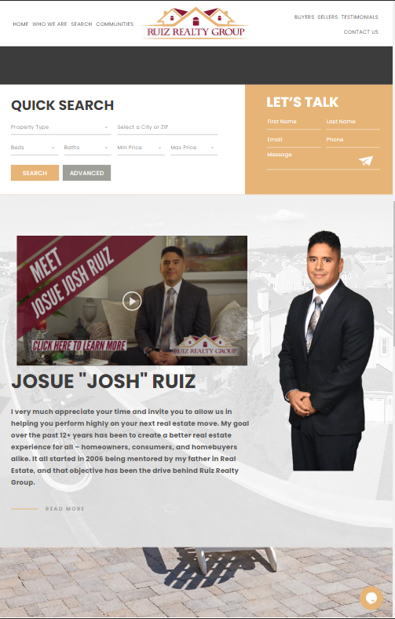

Contrast
Ruiz Realty Group
On this website, creators have used contrast to draw the viewer's eye to what is most important. In this part of the website, the realtor wants his face to be recognized so as to begin establishing a relationship with future clients. The contrast creates a focal point so the desired objective is reached. By using contrast effectively, the text on this site is very easy to read and makes information much more memorable for users. Key elements have been highlighted and there is clear emphasis on what is relevent to potential clients.
Visual Hierarchy
The Washingtond Post
Because this is a news website, the creators want to highlight and give more importance to headlines and then progressively focus on details. As we can see, this is accomplished by visual hierarchy. In this case, components have been arranged in a descending order of importance. The headlines and images are placed in much larger fonts than the articles themselves so readers are naturally attracted to the headlines and pictures and then go on to read details if they wish.
White space
Under Armour
This website effectively uses white space to separate different topics that their customers may be interested in. The white space distinguishes ideas but at the same time lets users know their is a relationship between what is being presented. This white sapce helps customers focus on what may be important to them and improves comprehension of what they are reading. Harmony and balance on the stie are also achieved because of the white space provided.